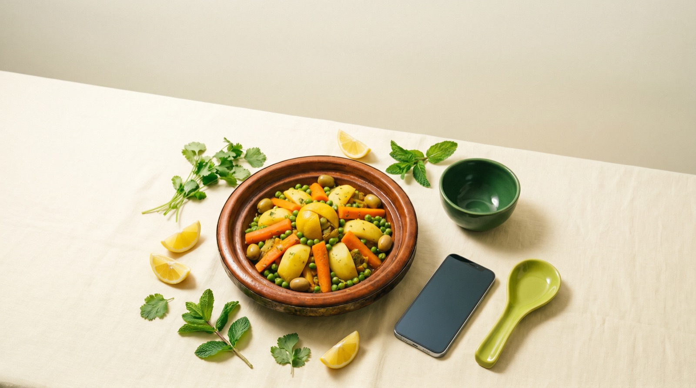
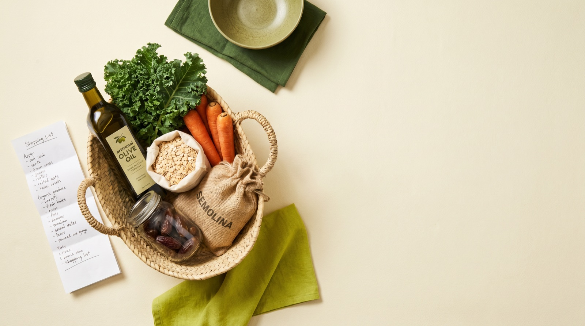
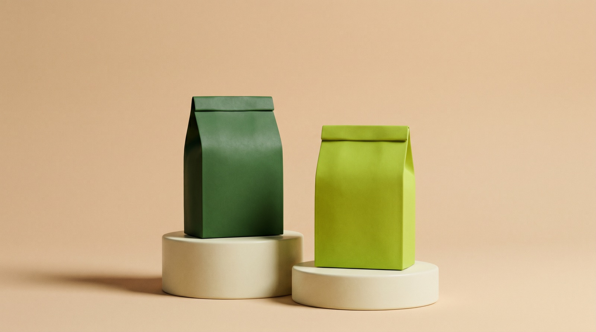
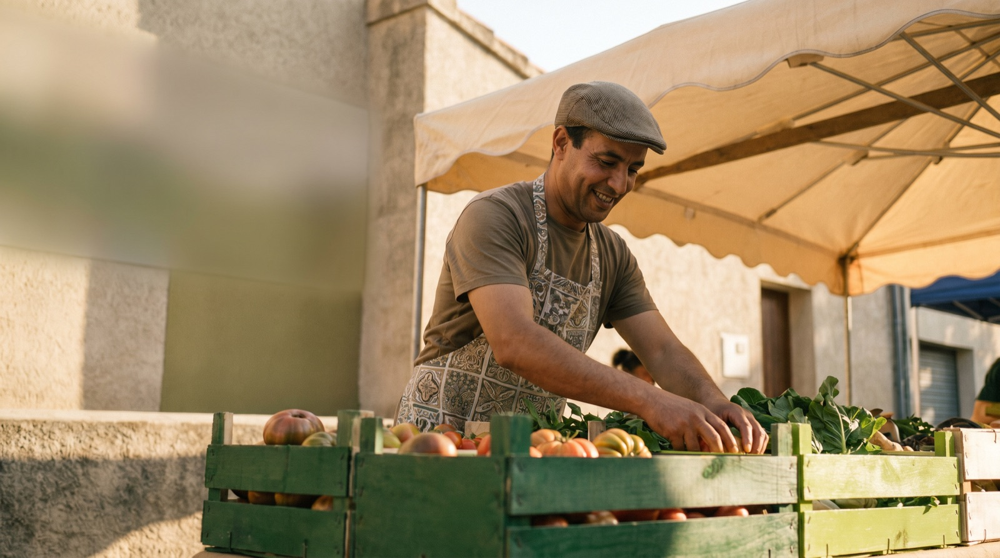

Un code-barres → le score santé 0-100, les additifs et le Nutri-Score de 2 000+ produits marocains.

Photographie ton repas : calories estimées, verdict honnête et bilan hebdo personnalisé par notre IA locale.

Compose ta liste, reçois des alternatives plus saines, imprime-la ou envoie-la sur WhatsApp en une image.

Compare côte à côte : sucre, sel, additifs, transformation — et l'avis clair de l'IA sur lequel choisir.

Valorisez vos produits sains auprès d'une communauté qui scanne chaque jour. Devenez partenaire Bayen.